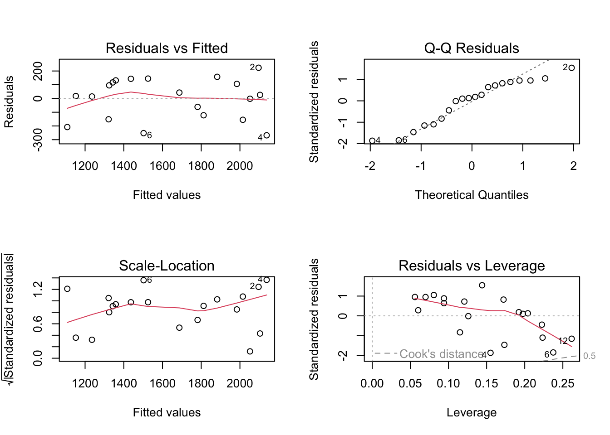

anscombe
#> x1 x2 x3 x4 y1 y2 y3 y4
#> 1 10 10 10 8 8.04 9.14 7.46 6.58
#> 2 8 8 8 8 6.95 8.14 6.77 5.76
#> 3 13 13 13 8 7.58 8.74 12.74 7.71
#> 4 9 9 9 8 8.81 8.77 7.11 8.84
#> 5 11 11 11 8 8.33 9.26 7.81 8.47
#> 6 14 14 14 8 9.96 8.10 8.84 7.04
#> 7 6 6 6 8 7.24 6.13 6.08 5.25
#> 8 4 4 4 19 4.26 3.10 5.39 12.50
#> 9 12 12 12 8 10.84 9.13 8.15 5.56
#> 10 7 7 7 8 4.82 7.26 6.42 7.91
#> 11 5 5 5 8 5.68 4.74 5.73 6.8930 Regression diagnostics
30.1 Stressing the visual: Anscombe
Consider the following 4 datasets (constructed in 1973 by the statistician Francis Anscombe).
In each case the mean and variance of \(Xs\) an \(Ys\) are almost exactly the same:
sapply(anscombe, mean)
#> x1 x2 x3 x4 y1 y2 y3 y4
#> 9.000000 9.000000 9.000000 9.000000 7.500909 7.500909 7.500000 7.500909
sapply(anscombe, var)
#> x1 x2 x3 x4 y1 y2 y3 y4
#> 11.000000 11.000000 11.000000 11.000000 4.127269 4.127629 4.122620 4.123249We estimate 4 OLS models:
# code from R help
ff <- y ~ x
mods <- setNames(as.list(1:4), paste0("lm", 1:4))
for (i in 1:4) {
ff[2:3] <- lapply(paste0(c("y", "x"), i), as.name)
mods[[i]] <- lmi <- lm(ff, data = anscombe)
print(summary(lmi))
}
#>
#> Call:
#> lm(formula = ff, data = anscombe)
#>
#> Residuals:
#> Min 1Q Median 3Q Max
#> -1.92127 -0.45577 -0.04136 0.70941 1.83882
#>
#> Coefficients:
#> Estimate Std. Error t value Pr(>|t|)
#> (Intercept) 3.0001 1.1247 2.667 0.02573 *
#> x1 0.5001 0.1179 4.241 0.00217 **
#> ---
#> Signif. codes: 0 '***' 0.001 '**' 0.01 '*' 0.05 '.' 0.1 ' ' 1
#>
#> Residual standard error: 1.237 on 9 degrees of freedom
#> Multiple R-squared: 0.6665, Adjusted R-squared: 0.6295
#> F-statistic: 17.99 on 1 and 9 DF, p-value: 0.00217
#>
#>
#> Call:
#> lm(formula = ff, data = anscombe)
#>
#> Residuals:
#> Min 1Q Median 3Q Max
#> -1.9009 -0.7609 0.1291 0.9491 1.2691
#>
#> Coefficients:
#> Estimate Std. Error t value Pr(>|t|)
#> (Intercept) 3.001 1.125 2.667 0.02576 *
#> x2 0.500 0.118 4.239 0.00218 **
#> ---
#> Signif. codes: 0 '***' 0.001 '**' 0.01 '*' 0.05 '.' 0.1 ' ' 1
#>
#> Residual standard error: 1.237 on 9 degrees of freedom
#> Multiple R-squared: 0.6662, Adjusted R-squared: 0.6292
#> F-statistic: 17.97 on 1 and 9 DF, p-value: 0.002179
#>
#>
#> Call:
#> lm(formula = ff, data = anscombe)
#>
#> Residuals:
#> Min 1Q Median 3Q Max
#> -1.1586 -0.6146 -0.2303 0.1540 3.2411
#>
#> Coefficients:
#> Estimate Std. Error t value Pr(>|t|)
#> (Intercept) 3.0025 1.1245 2.670 0.02562 *
#> x3 0.4997 0.1179 4.239 0.00218 **
#> ---
#> Signif. codes: 0 '***' 0.001 '**' 0.01 '*' 0.05 '.' 0.1 ' ' 1
#>
#> Residual standard error: 1.236 on 9 degrees of freedom
#> Multiple R-squared: 0.6663, Adjusted R-squared: 0.6292
#> F-statistic: 17.97 on 1 and 9 DF, p-value: 0.002176
#>
#>
#> Call:
#> lm(formula = ff, data = anscombe)
#>
#> Residuals:
#> Min 1Q Median 3Q Max
#> -1.751 -0.831 0.000 0.809 1.839
#>
#> Coefficients:
#> Estimate Std. Error t value Pr(>|t|)
#> (Intercept) 3.0017 1.1239 2.671 0.02559 *
#> x4 0.4999 0.1178 4.243 0.00216 **
#> ---
#> Signif. codes: 0 '***' 0.001 '**' 0.01 '*' 0.05 '.' 0.1 ' ' 1
#>
#> Residual standard error: 1.236 on 9 degrees of freedom
#> Multiple R-squared: 0.6667, Adjusted R-squared: 0.6297
#> F-statistic: 18 on 1 and 9 DF, p-value: 0.002165The quality of the fit and the regression coefficients are very similar across the 4 cases. But looking at it more closely, you see why a visual inspection is always needed:
# code from R help
op <- par(mfrow = c(2, 2), mar = 0.1 + c(4, 4, 1, 1), oma = c(0, 0, 2, 0))
for (i in 1:4) {
ff[2:3] <- lapply(paste0(c("y", "x"), i), as.name)
plot(ff, data = anscombe, col = "red", pch = 21, bg = "orange", cex = 1.2,
xlim = c(3, 19), ylim = c(3, 13))
abline(mods[[i]], col = "blue")
}
mtext("Anscombe's 4 Regression data sets", outer = TRUE, cex = 1.5)
30.2 Visual diagnostics:
30.2.1 Example
RainScotland<-read.csv("data/Ferguson/RainScotland.csv")
OLS2<-lm(Rainfall~Elevation+DistanceE,data=RainScotland)
summary(OLS2)
#>
#> Call:
#> lm(formula = Rainfall ~ Elevation + DistanceE, data = RainScotland)
#>
#> Residuals:
#> Min 1Q Median 3Q Max
#> -268.04 -129.63 21.96 120.61 223.58
#>
#> Coefficients:
#> Estimate Std. Error t value Pr(>|t|)
#> (Intercept) 1536.6951 157.6228 9.749 2.24e-08 ***
#> Elevation 1.8238 0.3053 5.975 1.51e-05 ***
#> DistanceE -5.2209 1.0152 -5.143 8.14e-05 ***
#> ---
#> Signif. codes: 0 '***' 0.001 '**' 0.01 '*' 0.05 '.' 0.1 ' ' 1
#>
#> Residual standard error: 156.3 on 17 degrees of freedom
#> Multiple R-squared: 0.8492, Adjusted R-squared: 0.8314
#> F-statistic: 47.86 on 2 and 17 DF, p-value: 1.04e-0730.2.2 Plots
Plot() applied to a lm object results in a sequence of 4 plots that are most useful for a visual inspection of the relationship you uncovered, as well as assessing whether the regression is valid and if any data behave as an outlier.
par(mfrow=c(2,2))
plot(OLS2)
Plot 1 shows the distribution of residuals against the predicted \(Y\) values. For a linear relationship, one expects that the residuals are equally distributed along the fitted values, i.e. spread similarly around the dashed horizontal line. Typically if the trend red curve would be clearly upward or downward sloping, or show (inverted-) U or V -shaped, that would mean the linearity assumption is not good. Some transformation or additional explanatory variables might be needed.
Plot 2 is a
qqplotagainst the theoretical normal distribution (qqnorm). While we have seen that variations are more likely at the extremes, one expect the general shape of the curve to follow 1 to 1 straight line.Plot 3 is often similar to plot 1, but more specifically aimed at finding if residuals are homoscedastic, i.e. have equal variance. The residuals are standardized (studentized) and the smoothed red line indicates changes in the variance. Again we expect it to be horizontal and the points to be equally distributed within a horizontal rectangle buffer.
Plot 4 shows standardized residuals (same as Plot 2) now plotted against
leverage, indicating whether some points may influence the fit more than others. Points spotted far on the right side of the plot may deserve some attention, as their absence may significantly affect the coefficients of the model. In addition, isolines (0.5, 1, …) of Cook’s distance statistic is provided. Again values beyond those lines must be investigated as potentially too influential.